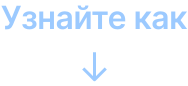

Превращаем кэшбэк с ежедневных покупок в помощь людям
Мы придумали социальный проект «ЯвПлюсе», где именно ты сможешь передать кэшбэк с покупок в благотворительные фонды-партнеры.
Регулярно будем рассказывать новости, чтобы миллионы людей смогли последовать примеру публичных персон или просто узнать больше о благотворительности в России.
Фонды, с которыми
мы сотрудничаем
Фонд содействия развитию науки, образования и медицины
Жизнь с ДЦП
Общероссийская спортивная федерация спорта глухих
Комитет физической культуры и спорта глухих России
Стать частью команды